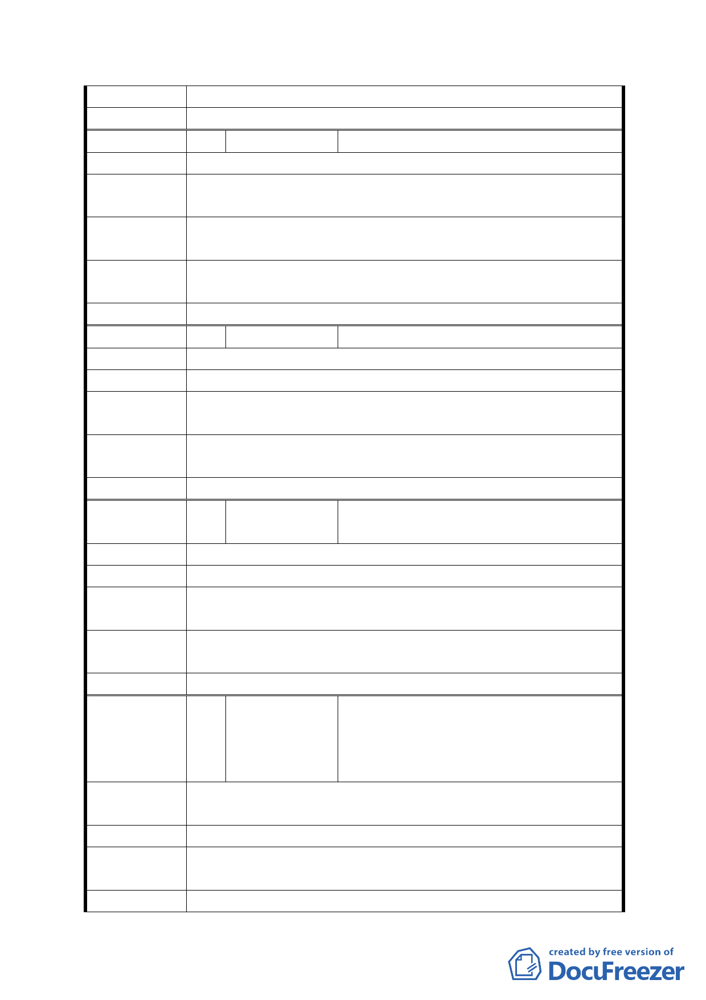

回應說明
委員會決議 同意依「市府修正後回應說明」辦理
編 號 39 陳情人
陳佑鈺
陳 情 理 由 反對10000地方公尺的貯留池。
建議
辦
法
貯留池是興隆下水道沿線，每一區設小小的容量，不是在我
們這邊設一個大水池。
第五次專案小組
審查結論
同編號 1
市府修正後
回應說明
同編號 7、16
委員會決議 同意依「市府修正後回應說明」辦理
編 號 40 陳情人
黃逢廣
陳 情 理 由 移軍營
建 議 辦 法 遷公墓
第五次專案小組
審查結論
同編號 1
市府修正後
回應說明
同編號 7、9
委員會決議 同意依「市府修正後回應說明」辦理
編 號 41 陳情人
黃金源、宋文君、蔡宜蓁、連秋絨、陳
金生
陳 情 理 由 不要貯留池。
建 議 辦 法 用遷公墓，取代貯留池。
第五次專案小組
審查結論
同編號 1
市府修正後
回應說明
同編號 7、9
委員會決議 同意依「市府修正後回應說明」辦理
錢傳勉、范光毅、蔡小青、陳玉儒、李
編 號 42 陳情人
曇新、鄭慶柏、黃玉杏、陳涵韻、陳永
富、黃政仁、林美蘭、林素、徐慧芳、
范丁妹、藩維良、呂金生
陳情理由
1. 不要軍營。
2. 不要貯留池。
建 議 辦 法 遷墳墓取代貯留池。
第五次專案小組
審查結論
同編號 1
市府修正後 同編號 7、9
- 36 -